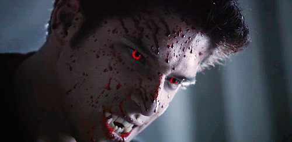
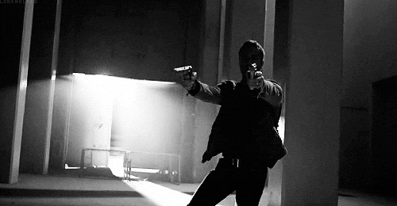
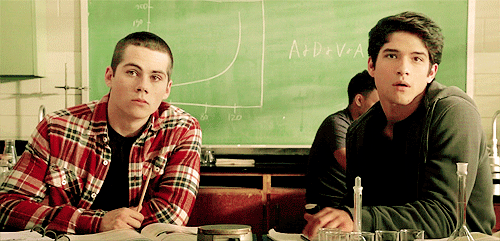
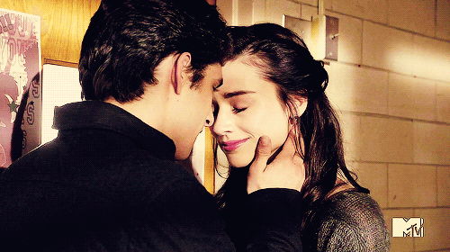
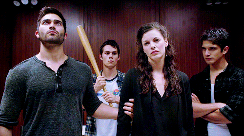

Teen Wolf é uma das maiores séries atuais voltadas para o público jovem. Criada por Jeff Davis para a MTV e exibida desde 2011, conta a história de Scott (interpretado por Tyler Posey), um adolescente que é mordido por um lobisomem e precisa encarar essa nova fase de sua vida. Com a ajuda de seus amigos, usa essa sua nova identidade para manter a cidade de Beacon Hills a salvo, mas acaba atraindo vários inimigos também. Olhando superficialmente pode parecer mais uma série sobrenatural que provavelmente será mal desenvolvida, mas basta alguns episódios para notar a qualidade desta produção americana e apaixonar-se pela história. Sem mais delongas, te darei dez motivos para assistir Teen Wolf.
As Mitologias
O prato principal da série são os lobisomens, obviamente. Muito bem contada e em mínimos detalhes, somos apresentados desde suas mordidas e habilidades às hierarquias de Alfa (o líder da alcateia), Beta (os membros dela) e Ômega (o lobo solitário, sem alcateia), sendo todos diferenciados também pela cor de seus olhos. Entre suas características estão os sentidos apurados, força, velocidade e cura sobre-humana, além das transformações à lua cheia com crises de medo, raiva e emoções à flor da pele. Convenhamos que essa coisa toda é no mínimo empolgante pra caramba.
Os caçadores
E em uma cidade repleta de criaturas estranhas e possivelmente perigosas, claro que há também um grupo que se propõe a acabar com a raça deles. Os caçadores possuem um código, "nós caçamos aqueles que nos caçam", e um arsenal com itens usados para suas caças. Também são divididos em hierarquia: o iniciado(em treinamento),o caçador (treinamento completo), o caçador experiente (treinadores com acesso ao arsenal completo, geralmente oriundos de linhagem pura), os mercenários (equivalente ao caçador normal, mas que não concorda com o código e ganha dinheiro matando criaturas) e o assassino profissional (o que se especializa em matar por dinheiro, equivalente a um caçador experiente).
As Melhores Amizades
Seja Scott e Stiles ou Allison e Lydia, Teen Wolf nos apresenta grandes amizades desde seu primeiro episódio, não deixando dúvidas de que nós gostaríamos de possuir algo similar - ou que se especializa em matar por dinheiro, equivalente a um caçador experiente). felizes por termos. Ao longo de seus episódios, esse sentimento de comunhão é comprovado e torna-se ainda mais forte, apertando os laços no decorrer de situações arriscadas e de difícil escolha.
E casais também!
Com tantas relações fortes nesse trama, já dá para saber que a emoção será de mesmo nível ou ainda superior. Não apenas no plano da amizade, mas também quando se fala em ligações amorosas. Com casais de todos os sabores para todos os gostos, o romance não fica aquela coisa cansativa - assim como também não é abordado superficialmente. Além do típico casal principal, várias outras duplas são muito bem exploradas e altos bromances rolam nas entrelinhas, provando para nós que o roteirista acertou em cheio. Prepare o lenço e deixe o "alerta de shipp" bem ativado, pois ele apitará diversas vezes nesse ínterim você sofrerá por isso. Quem avisa, amigo é.
Comédia x Tensão
Como toda boa série, as cenas engraçadas e tensas intercalam o tempo todo. Seja com as trapalhadas de Scott, a ironia de Stiles ou sarcasmo inteligente e frio de Lydia, boas risadas serão tiradas do telespectador, queira ele ou não. Obviamente, como nem tudo são flores - e graças a Deus que não -, os momentos de choro absoluto e nervos à flor da pele com certeza virão. Deixe objetos frágeis longe do seu alcance, abrace um travesseiro e maratone. Maratone mesmo. Difícil é conseguir não assistir todos os episódios de uma vez.